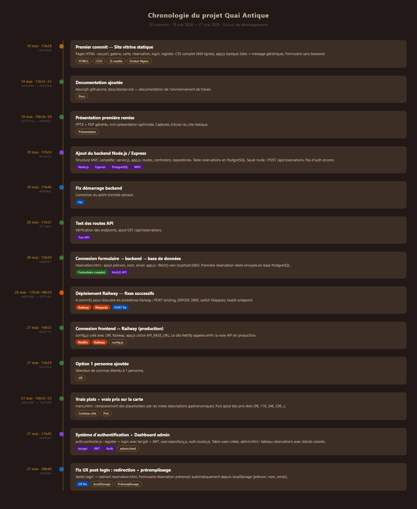
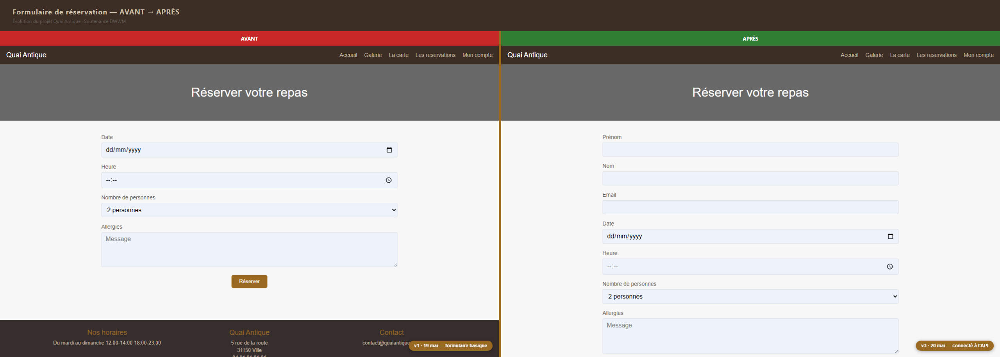
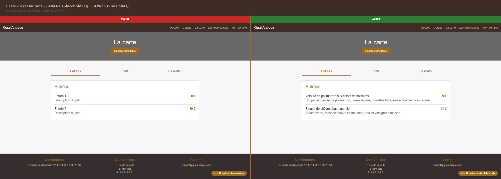
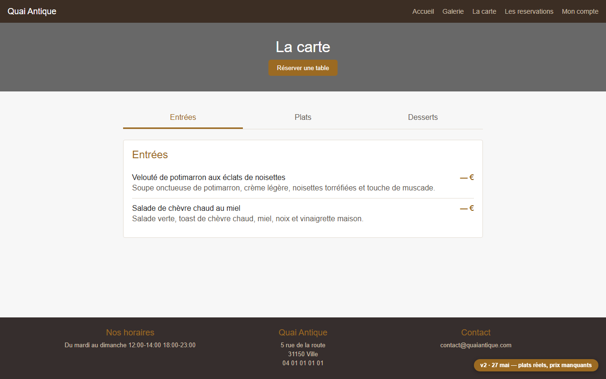
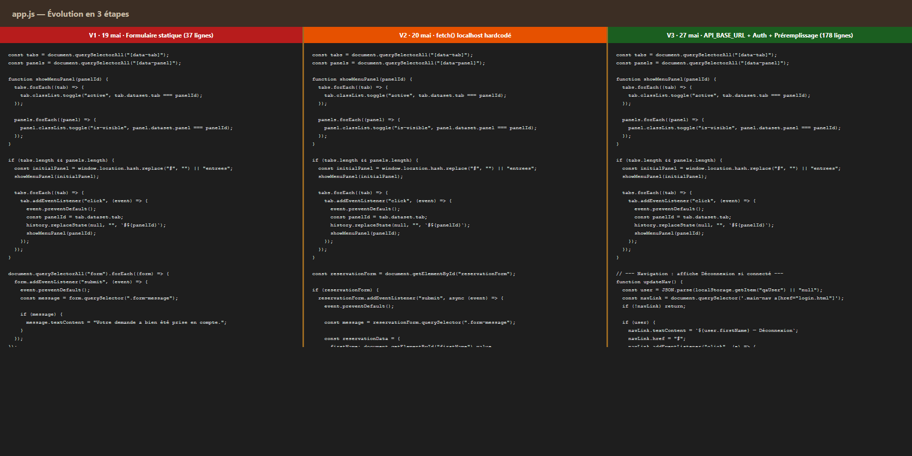
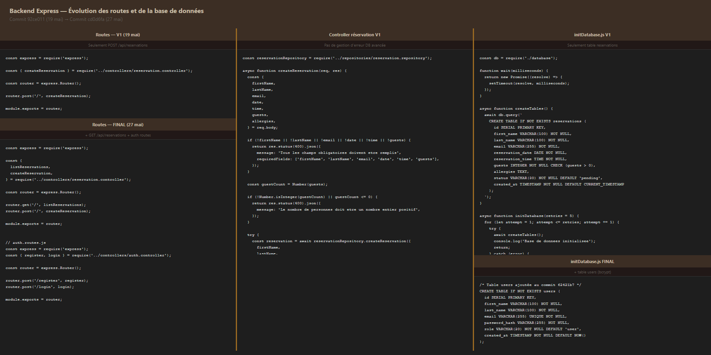

Comparatifs visuels AVANT → APRÈS · Soutenance DWWM
20 commits · 19 mai → 27 mai 2026
Vue chronologique de toutes les étapes de développement : site statique → backend Express → déploiement Railway → authentification JWT → dashboard admin. Chaque couleur correspond à un type d'action (feature, fix, backend, déploiement).

AVANT (commit e243fd5 · 19 mai) :
Le formulaire ne contient que date, heure, nombre de personnes et allergies.
Pas de prénom, ni nom, ni email. La soumission affiche un simple message statique,
aucune donnée n'est enregistrée nulle part.
APRÈS (commit a3db5b7 · 20 mai) :
Ajout de prénom, nom, email. Formulaire connecté à l'API Express via fetch().
Les réservations sont réellement stockées en base PostgreSQL Supabase.

AVANT (commit e243fd5 · 19 mai) :
Les plats s'appellent "Entrée 1", "Plat 2", "Dessert 1" avec des descriptions
génériques et des prix fictifs.
APRÈS (commit 7bd7efb · 27 mai) :
Vrais intitulés gastronomiques (Velouté de potimarron, Magret de canard, etc.),
vraies descriptions et vrais prix (9 €, 24 €, 8 €…).

Il s'est écoulé exactement 1 minute entre ce commit et le suivant (7bd7efb) qui a ajouté les prix. Cette capture montre l'état intermédiaire : les vrais noms et descriptions des plats sont là, mais les prix affichent encore "— €". Cela illustre un développement incrémental et atomique en Git.

V1 (19 mai · rouge) : Seulement les onglets du menu + un handler générique
sur tous les formulaires. Aucune logique métier. 37 lignes.
V2 (20 mai · orange) : Premier fetch() vers l'API, mais URL hardcodée
en localhost:3003 — le site Netlify ne peut pas appeler cette URL.
V3 (27 mai · vert) : API_BASE_URL depuis config.js,
gestion complète auth (register + login + localStorage), updateNav(), préremplissage.
178 lignes.

V1 (19 mai · commit 92ce011) :
Seule route POST /api/reservations. Une seule table reservations.
Pas d'authentification. Le contrôleur n'a pas de gestion d'erreur avancée.
FINAL (27 mai · commit cd0d6fa) :
5 routes actives (health + 2 auth + 2 reservations). Table users ajoutée
avec password_hash et role. Authentification bcrypt + JWT complète.
CORS multi-origine configuré.